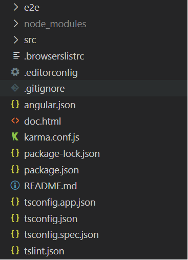
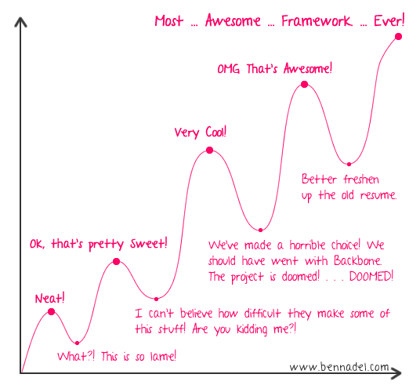

Aplicaciones Distribuidas en Internet
Trabajo en grupo - Introducción a Angular
Integrantes del grupo:
- Javier Martínez Albaladejo
- Adrián Cerdá San Miguel
- Aitor Rodríguez Sanz
Introducción
En este documento, vamos a tratar de introducir al lector en el mundo de Angular mostrando una visión general del framework y realizando un pequeño tutorial de una aplicación CRUD. Está pensado para lectores con conocimientos básicos de otros frameworks similares, en concreto, comparamos algunas de sus características y conceptos con Vue.js, por ser el que hemos utilizado durante la asignatura.
El tutorial se basa en la versión 11 de Angular y utiliza persistencia de datos en el lado del cliente mediante localStorage, sin backend, por simplicidad, ya que el objetivo es ilustrar el uso de Angular y no de backends ni de servicios como Firebase que ya se pueden ver en detalle en los trabajos de nuestros compañeros.
¿Qué es Angular?
Framework web
Angular (no se debe confundir con AngularJS) es un framework de desarrollo de aplicaciones web pensado para crear SPAs (Single Page Applications) y aplicaciones móviles. Es de código abierto, mantenido por Google y de uso gratuito. Se programa en TypeScript, que es algo así como una evolución de JavaScript que añade comprobaciones de tipo de datos estáticamente.
Diferencias y semejanzas
Si has trabajado con Vue o React, muchos conceptos son similares. En Angular también se pueden crear componentes con plantillas, datos y elementos reactivos. Angular tiene además un sistema de inyección de dependencias que permite utilizar servicios de manera eficiente en estos componentes.
En cuanto a la reactividad, mientras que en Vue hay que especificar en la definición del componente el tipo de reactividad de una variable (dependiendo de si se pone en computed, data, etc), en Angular simplemente se declaran como atributos de la clase del componente, como veremos más adelante.
En cuanto a la estructura de archivos para la definición de los componentes, en Vue se pueden crear Single File Components, que lo tienen todo en un único archivo, mientras que en Angular, por cada componente se crean 4 archivos, separando la plantilla, el css y la clase, más un archivo de tests. Esto hace que en Angular cada componente resida en su propia carpeta.
Conceptos básicos de Angular
Componentes
Como hemos dicho, las aplicaciones de Angular se construyen a base de componentes.
Cada uno de ellos es una clase de TypeScript con anotación @Component, que tiene asociada una plantilla.
Además, para poder incluir el componente en otras plantillas, su definición incluye un selector de CSS que, típicamente,
es un nombre de elemento, por ejemplo app-navbar, para que se pueda usar el componente como <app-navbar/>.
Los componentes tienen además un ciclo de vida, permitiendo ejecutar acciones al pasar por cada fase.
El ejemplo más práctico es la función ngOnInit(), que nos permite preparar los atributos del componente cuando esté listo.
Veremos más adelante cómo crear componentes con el CLI.
Plantillas
De forma similar a Vue, las plantillas de Angular se parecen mucho al HTML estándar, con elementos y atributos extra y con directivas.
-
Se puede interpolar variables en el texto mediante la notación
{{ nombreVariable }}. -
Se puede enlazar un evento de un componente con un método del componente:
<button (click)="enviar()">Ok</button>. -
Se puede añadir sentencias de control con los atributos ngIf, ngFor, ...:
<li *ngFor="let a of asignaturas">...<li> -
Se puede añadir "pipes" o filtros (con o sin argumentos) para cambiar la presentación de unos datos:
{{ birthday | date:"MM/dd/yy" }} -
Se puede enlazar propiedades de un elemento a una expresión dinámica (en este ejemplo una variable,
que puede ser una propiedad del componente):
<img [src]="urlImagen"> -
Se puede enlazar bidireccionalmente una propiedad de un componente:
<mi-componente [(propiedad)]="5">.
Pero para ello, hay que definir lo siguiente en el componente:@Input() propiedad: number @Output() propiedadChange = new EventEmitter<number>() // importante que sea el mismo nombre + Change cambiarPropiedad(p: number) { this.propiedad = p this.propiedadChange.emit(this.propiedad) // siempre que cambie la propiedad se debe emitir el evento }Más información sobre two-way binding aquí y sobre las anotaciones@Inputy@Outputaquí. -
Se puede declarar una variable de plantilla para referirnos a un elemento o componente desde cualquier parte de la misma plantilla:
<input #phone placeholder="phone number" /> <button (click)="callPhone(phone.value)">Call</button>Más adelante veremos un caso particular de uso de variables de plantilla para un formulario con la directivangModel. Más información aquí.
Directivas
Hay tres tipos de directivas:
- De atributo:
- Se añaden en las plantillas como si fueran atributos de HTML a otros componentes o elementos HTML.
- Modifican el comportamiento de dichos elementos.
-
Ejempos built-in (definidos por módulos como RouterModule o FormsModule):
NgClass: Controla la(s) clase(s) CSS.NgStyle: Estilos CSS.NgModel: Más adelante se verá en uso.
- Estructurales:
- Responsables del layout del HTML. Añaden, quitan o manipulan elementos.
- Ejemplos built-in:
NgIf,NgFor,NgSwitch
- Componentes: sí, los componentes son directivas, con la particularidad de que tienen una plantilla.
Se construyen como los componentes: son clases con la anotación @Directive y un selector CSS.
Pueden responder a eventos del elemento en el que se ponen, por ejemplo, añadiendo listeners de la siguiente forma en la clase:
@HostListener('mouseenter') onMouseEnter() {
this.highlight('yellow');
}
private highlight(color: string) {
this.el.nativeElement.style.backgroundColor = color;
}
Se pueden definir directivas estructurales que hagan lo mismo que las built-in. Más información aquí.
Inyección de dependencias (Servicios)
Una clase necesita unos servicios u objetos para realizar sus funciones. Esos son los que llamamos sus dependencias. El mecanismo de inyección de dependencias de Angular permite proveer a la clase de dichas dependencias en el momento de la instanciación.
En otras palabras, si en un componente se necesita acceso a un servicio, puedes incluir el servicio como argumento del constructor del componente:
constructor(listadoService: ListadoService)...y Angular se encarga de inyectar la instancia del servicio a la hora de construir el componente. Eso sí, para que Angular sepa que
ListadoService es un servicio inyectable, es necesario declarar la clase del servicio con la siguiente anotación:
@Injectable({
providedIn: 'root'
})
export class ListadoService{ ... }
También se puede inyectar un servicio en el constructor de otro servicio, de la misma manera.
Comienzo del tutorial
Vamos a comenzar con el tutorial de una sencilla aplicación que permite realizar CRUD sobre un conjunto de Asignaturas.
Configuración del entorno
Lo primero es instalar Node. Para esto simplemente vamos a la página oficial de Node y nos lo descargamos para nuestro SO. Si estás en Linux, seguramente lo podrás instalar desde el gestor de paquetes de tu distribución. Una vez instalado Node, tenemos que hacer lo mismo con Angular, usando el siguiente comando:
npm install -g @angular/cli #instala la última versión de angular/cli
ng update @angular/cli #para actualizar angular/cli
npm uninstall -g @angular/cli #desinstala angular/cli
Generación del proyecto
Una vez configurado el entrono podemos crear nuestro proyecto usando el siguiente comando:
Con esto se nos generará nuestro proyecto y ya podremos importarlo a nuestro IDE para poder trabajar en él.El
--routing es para habilitar el uso del router.
Servicios
Para la aplicación usaremos un archivo de servicios para definir la lógica de la aplicación. Para crearlos usaremos los comandos de CLI.
En este servicio es desde donde inicializaremos nuestros datos desde el localStorage y donde definiremos
las operaciones del CRUD. Si en lugar de almacenar los datos en localStorage tuviésemos un backend, también es aquí
donde pondríamos nuestras llamadas al API del backend.
Componentes
Para nuestra página tendremos diferentes componentes. Para crearlos usaremos los comandos de CLI.
Si no pusiéramos el components/ delante, crearía todos los componentes directamente en la carpeta src/app.
De esta forma, los crea en src/app/components, para tenerlo más organizado.
Componente Listado
Este componente tendrá una tabla en la que podremos ver el listado de asignaturas. Para definir las asignaturas hemos creado un model, usando el siguiente comando del CLI.
Tras definir el modelo creamos una tabla en el fichero de la plantilla (el.component.html) como la siguiente.
En el fichero TypeScript del componente, que es donde definiremos la lógica del componente, declaramos
un array de Asignatura. Este array se inicializa con la función ngOnInit(). Usamos el servicio para
obtener el listado de asignaturas y desde la tabla iteramos sobre la lista para mostrarlas todas.
En la tabla hemos definido 2 botones. Uno para eliminar y otro para editar. El componente eliminar
lo que hace es pasar el id de la asignatura que queremos eliminar a la función de deleteAsignatura().
Esta función simplemente, usando el service, pasa el id de la asignatura a eliminar y la borra.
El botón de editar, en cambio, nos llevará a una nueva vista: el componente creacion, que veremos a
continuación.
Componente Creación
Este componente tendrá un formulario para crear o editar asignaturas. Para guardar los valores que
introduzca el usuario vamos a usar ngModel. NgModel se trata de una sintaxis que nos provee Angular
para realizar dataBinding bidireccional de manera más sencilla.
Lo primero es importar FormsModule en al archivo app.module.ts.
Una vez instalado podremos usar la directiva ngModel en nuestra plantilla y los valores
introducidos serán guardados tanto en la plantilla como en el componente.
En el fichero TypeScript lo primero que hacemos es comprobar si se ha pasado el párametro id a través de la URL.
Esto lo hacemos para diferenciar si el usuario quiere crear una nueva asignatura o editar una.
Una vez sabemos que operación se quiere hacer usamos el servicio de la operación. En caso de
crear simplemente pasamos la nueva asignatura. Si queremos editar pasamos la asignatura con
los nuevos datos y su id.
Conclusión
Angular es un framework a considerar a la hora de realizar el cliente de una aplicación web. Pese a su gran curva, que es bastante alta, si has trabajado previamente con algún framework MVC te sentirás muy familiarizado.
Si todavía tenéis dudas acerca de aprender Angular, aquí tenéis algunas de las ventajas más relevantes de Angular frente a otros frameworks:
Sin embargo, tiene algunos aspectos negativos de los cuales nos hemos ido dando cuenta a medida que hemos desarrollado esta aplicación.
Por ejemplo, en el caso de los servicios y de los componentes, se añade al nombre .component o .service según corresponda.
Esto, combinado con los cuatro archivos por componente, hace más dificil encontrar el archivo que buscas en el explorador de archivos
del editor o en las pestañas abiertas,
ya que son todos los nombres muy parecidos y con el nombre del componente y la extensión visualmente muy separados.
Por otra parte, el tiempo que tarda en arrancar el servidor es mayor que en otros frameworks que usan JavaScript en vez de TypeScript.
Vídeo de la demo
Si no se ve bien el vídeo, puedes ir con el enlace aquí.